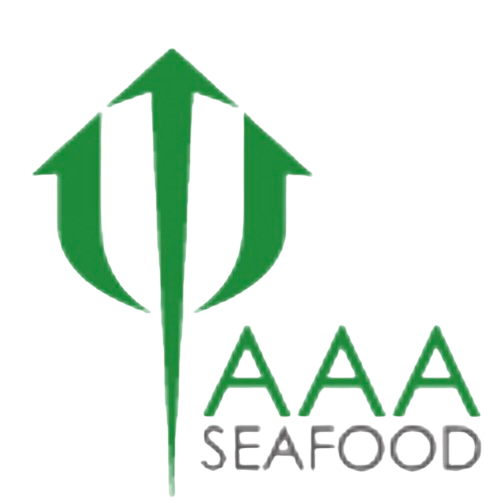
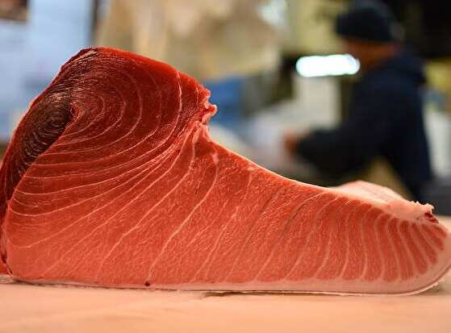
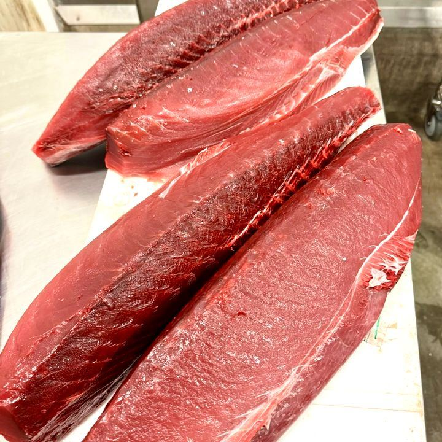
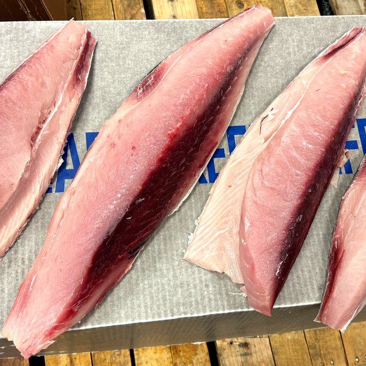
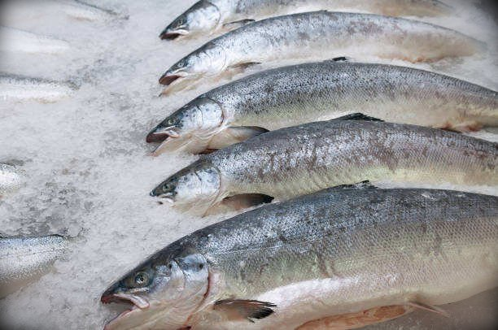
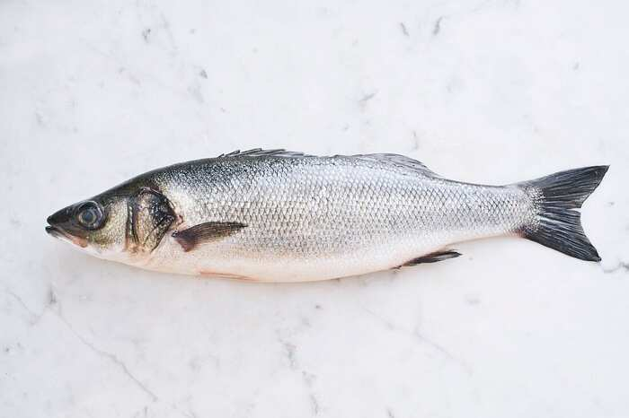
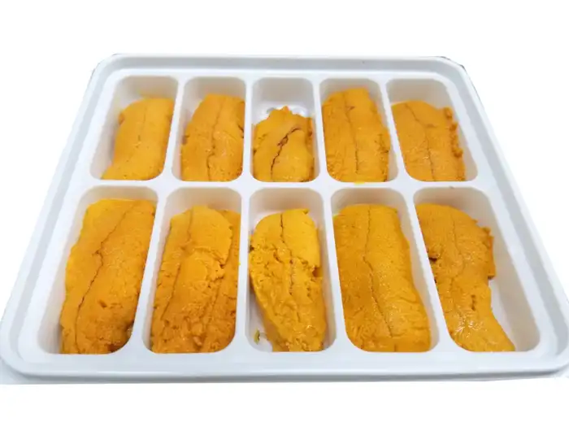

AAA INTERNATIONAL SEAFOODWHOLESALE SEAFOOD DISTRIBUTORPremium seafood, cut to your spec, for fine-dining kitchens, sushi bars, hotels, caterers, and foodservice operators across Los Angeles and Southern California.
Whether you run a fine-dining kitchen, a sushi counter, a hotel restaurant, or a catering operation, we supply the highest-grade tuna, fresh fish, and uni, cut to the portions you need, for a one-time order or a regular one.
We carry only the highest grade of bluefin, yellowfin, and albacore available, for sashimi, crudo, and tartare.
King salmon, branzino, striped bass, madai, kanpachi, and more, for the raw bar, the grill, and the oven.
Whole tuna loins or portions cut to your size, so a tasting menu or a high-volume line gets the same piece every time.
Every order is handled under HACCP-aligned, cold-chain protocols from the dock to your kitchen door.
Routes run from Santa Barbara and Bakersfield down through Los Angeles, the Inland Empire, and San Diego County. See delivery areas
Pallet orders are available for high-volume kitchens and foodservice operators, with pickup in Vernon. Learn more
The products fine-dining and foodservice kitchens order most.






Call us at 323-582-8003 or send us a message.
Let us know the products, cuts, portion sizes, and how often you need them.
Our sales team quotes each order and sets up delivery on our daily routes.
Only the very best. We carry nothing but the highest grade available, so every loin that reaches your kitchen meets the same standard.
Absolutely. Take whole tuna loins, or let us portion them to your exact size so every plate looks the same.
Our daily delivery routes reach Los Angeles, Orange County, San Diego, the Inland Empire, Palm Springs, Bakersfield, and Santa Barbara. See our delivery areas
We do. Whether it’s a single event or an ongoing order, tell us what you need and our sales team will take care of the rest.
Seafood prices follow the market, so we quote every order by product, cut, and quantity. That way you always get current pricing.
Yes. Pallet orders are available for larger kitchens and foodservice operations, with pickup in Vernon. Learn more
Speak with our sales team to set up delivery for your restaurant or foodservice operation.